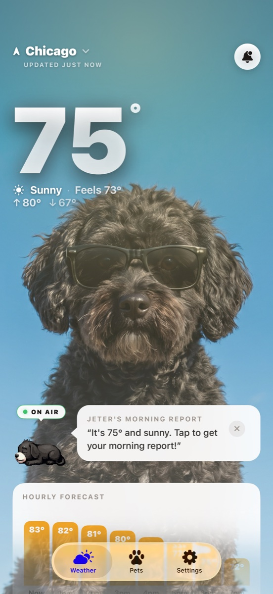
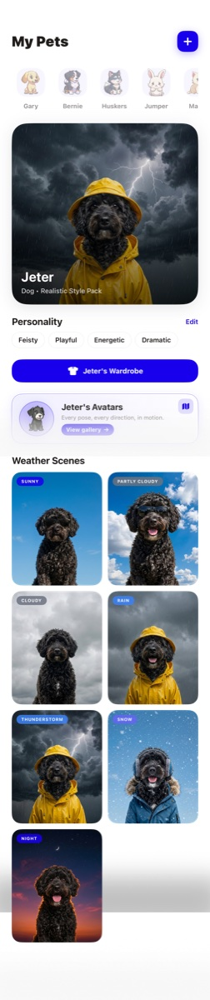
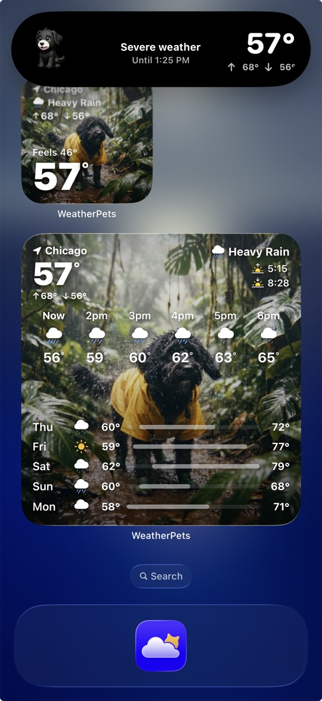

Top 5 Pet Apps Every Dog & Cat Owner Needs (2026)
From everyday care to a daily smile, these are the five iOS apps we think every dog and cat owner should have in 2026.
A handful of apps can make pet life easier — and a lot more fun. Here are our five essentials, ranked.
1. WeatherPets — The daily essential
WeatherPets turns your dog or cat into your weather reporter, with real forecasts, AI scenes of your own pet, and a home screen widget. It's the one you'll open every single morning — useful and joyful at once. Available on iOS.
2. Rover — Sitters & walkers
Find trusted, reviewed pet sitters and dog walkers when life gets busy.
3. Chewy — Food & supplies
Keep food and supplies arriving on schedule, with famously good support.
4. Petfinder — Adoption
Browse adoptable dogs and cats from shelters and rescues near you.
5. 11pets — Health tracking
Keep vaccinations, vet visits, and care reminders organized in one place.
Want more rankings? See the best pet apps for iPhone in 2026 and our Top 5 iOS apps for pet owners.
Turn your own pet into your daily weather reporter
Pick your pet, give it a personality, and get your real local forecast delivered in its voice. AI weather scenes, home and lock screen widgets, Live Activities, and morning and evening reports. It is the one weather app you will actually look forward to opening.
- Your real pet, restyled for every weather condition
- Full 10-day forecast with live tracking and widgets
- Live Activities that follow the weather in real time



